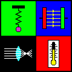

| www.walter-fendt.de/ph14br | (Java 1.4, 38 applets, 2003-01-12) |
| www.walter-fendt.de/ph11br | (Java 1.1, 38 applets, 2003-01-12) |
| Download |
|  |
Applets Java de FísicaWalter Fendt Tradução: CEPA |
| Versão em português |
|
|
||||||||
| Mecânica | |
| Equilíbrio entre Três Forças | 03/11/2000 - 01/12/2003 |
| Resultante das Forças (Adição de Vetores) | 11/02/1998 - 01/12/2003 |
| Sistema de Polias | 03/24/1998 - 01/12/2003 |
| Princípio da Alavanca | 11/02/1997 - 01/12/2003 |
| Plano Inclinado | 02/24/1999 - 01/12/2003 |
| Experimento sobre a Segunda Lei de Newton | 12/23/1997 - 01/12/2003 |
| Movimento dos Projéteis | 09/13/2000 - 01/12/2003 |
| Colisões Elástica e Inelástica | 11/07/1998 - 01/12/2003 |
| O Berço de Newton | 11/04/1997 - 01/12/2003 |
| Carrossel (Força Centrípeta) | 03/10/1999 - 01/12/2003 |
| Primeira Lei de Kepler | 03/25/2000 - 01/12/2003 |
| Segunda Lei de Kepler | 04/04/2000 - 01/12/2003 |
| Pressão Hidrostática em Líquidos | 02/03/1999 - 01/12/2003 |
| Força de Empuxo nos Líquidos | 04/19/1998 - 01/12/2003 |
| Oscilações e Ondas | |
| Pêndulo | 05/21/1998 - 01/12/2003 |
| Pêndulo tipo Mola | 05/24/1998 - 01/12/2003 |
| Pêndulos Acoplados | 07/05/1998 - 01/12/2003 |
| Oscilações Forçadas (Resonância) | 09/09/1998 - 01/12/2003 |
| Ondas Estacionárias Longitudinais | 06/08/1998 - 01/12/2003 |
| Reflexão e Refração de Ondas (Princípio de Huygens) | 03/05/1998 - 01/12/2003 |
| Interferência de Duas Ondas: Circulares ou Esféricas | 05/22/1999 - 01/12/2003 |
| Um Exemplo do Efeito Doppler | 02/25/1998 - 01/12/2003 |
| Eletrodinâmica | |
| Campo Magnético de um Fio Linear Transportando uma Corrente | 09/18/2000 - 01/12/2003 |
| Força de Lorentz | 06/01/1998 - 01/12/2003 |
| Motor de Corrente Contínua | 11/29/1997 - 01/12/2003 |
| Gerador | 05/08/1998 - 01/12/2003 |
| Lei de Ohm | 11/23/1997 - 01/12/2003 |
| Circuitos AC Simples | 06/13/1998 - 01/12/2003 |
| Circuito Oscilatório Eletromagnético | 10/23/1999 - 01/12/2003 |
| Ondas Eletromagnéticas | 09/20/1999 - 01/12/2003 |
| Ótica | |
| Refração da Luz | 12/20/1997 - 01/12/2003 |
| Telescópio Astronômico Refrator | 03/08/2000 - 01/12/2003 |
| Termodinâmica | |
| Processos Especiais de um Gás Ideal | 12/25/1999 - 01/12/2003 |
| Teoria da Relatividade | |
| Um Exemplo de Dilatação do Tempo | 11/15/1997 - 01/12/2003 |
| Física Atômica | |
| Efeito Fotoelétrico | 02/20/2000 - 01/12/2003 |
| Teoria de Bohr do Átomo de Hidrogênio | 05/30/1999 - 01/12/2003 |
| Física Nuclear | |
| Série de Decaimentos Radioativos | 07/20/1998 - 01/12/2003 |
| Lei do Decaimento Radioativo | 07/16/1998 - 01/12/2003 |
Walter Fendt, 2003-01-12
Tradução:
Miriam G. de Castro, Antonio F. de Moraes Filho e Juliana M. Marques Giordano - CEPA
Bohdan Metchko Junior
Cesar Nunes
 |
 |
 |
|
| Mathematik-Applets | Astronomie-Applets | Homepage |
| Copyright |
| Awards, Links |